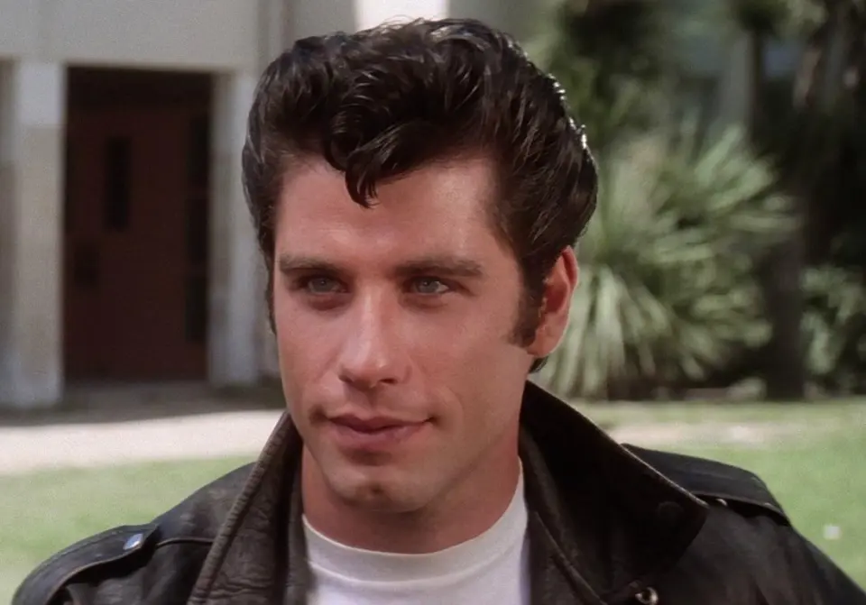
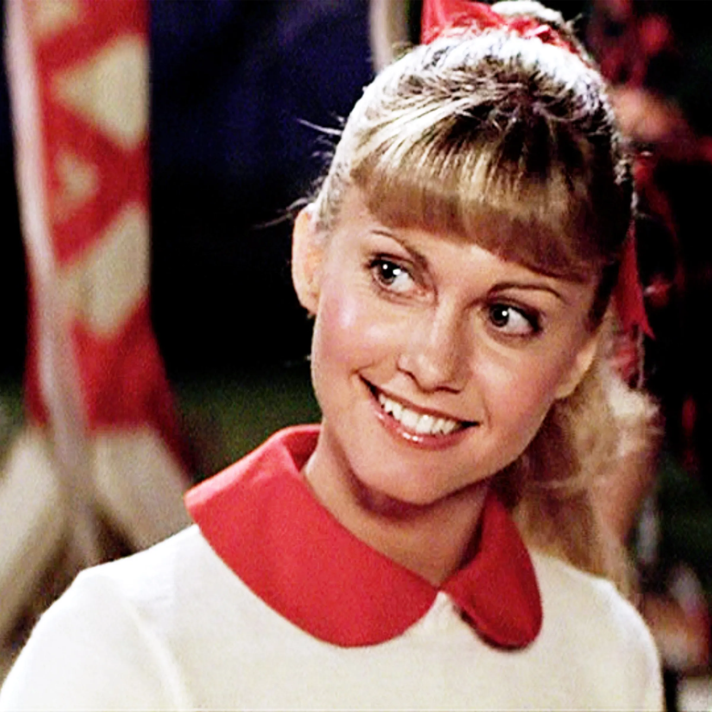
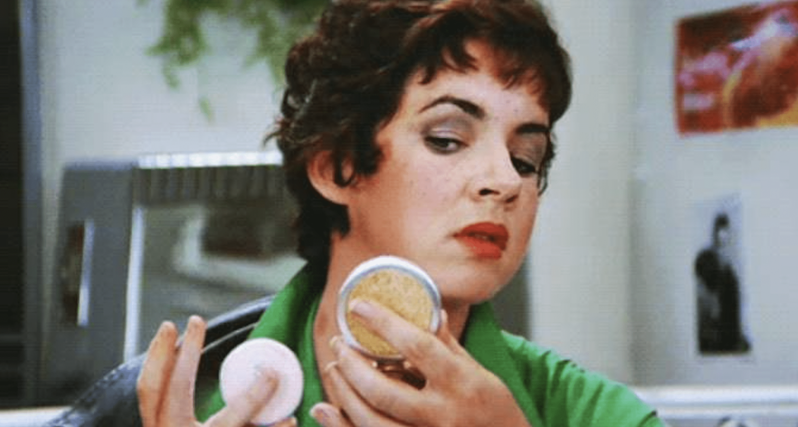
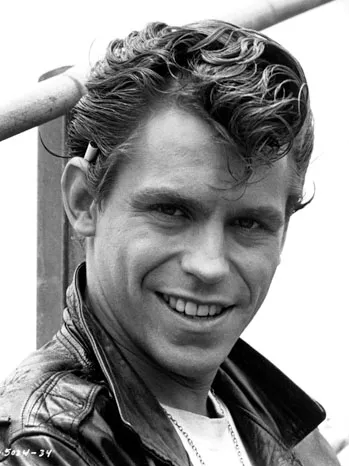
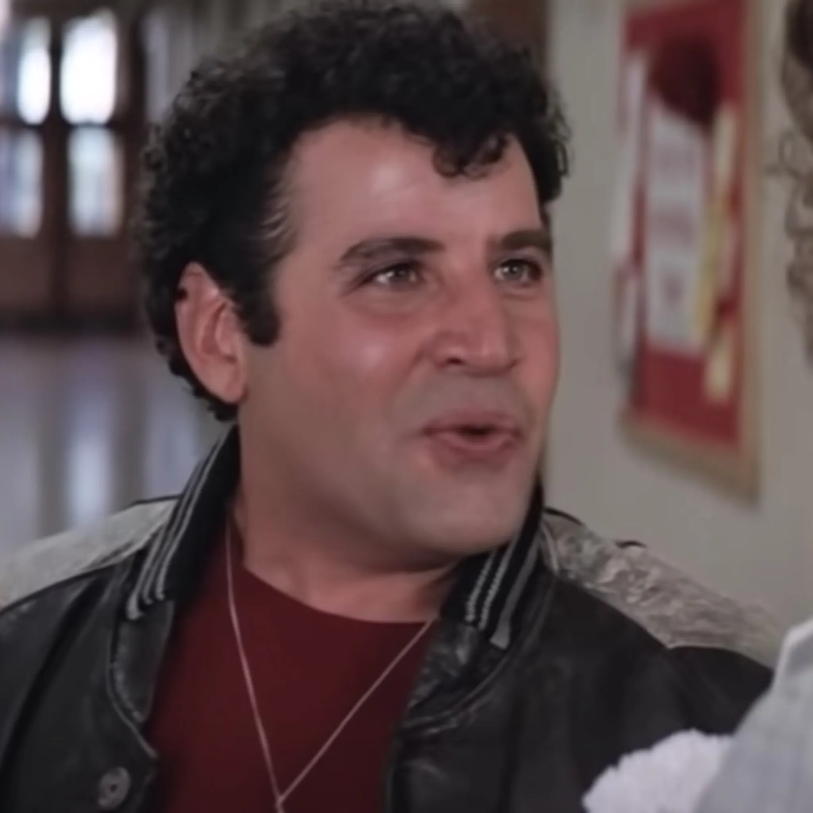
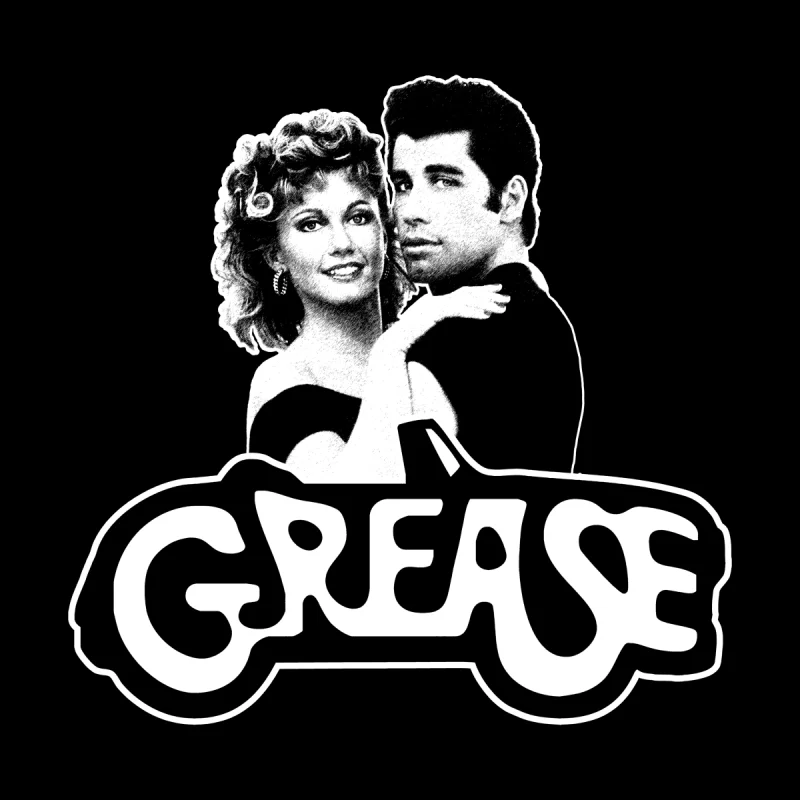
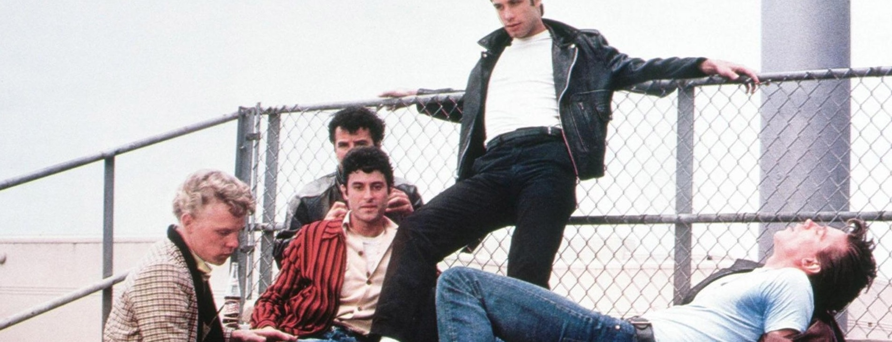

Grease is a musical comedy that follows the lives of teenagers in the 1950s. The story centers around the romance between Danny Zuko and Sandy Olsson, who meet during the summer and fall in love.
However, when they return to school, they find themselves in different social circles, leading to various comedic and dramatic situations. The film features catchy songs, energetic dance numbers, and explores themes of love, friendship, and teenage rebellion.
